Chart forms
0. Is it a figure?
One number goes in the text or on a stat tile. Values to look up go in a table.
1. Change over time
Line chart
Tones in slot order at 1.6 pt, ringed end dots, end labels; no legend up to four series. Bands in the tint at 0.55 opacity, member runs at 0.7 pt. Counts start at zero.
Area and stacked area
Tints with 1.2 pt surface gaps, slot order from the bottom, labels at the right end in the deep step. Stack only parts of a whole.
Slope and bump charts
Slope chart for two moments, bump chart for ranks. Claimed series in the tones, the rest rule grey.
Second y axis
Only for two series whose timing is the claim.
- Slots 1 and 2.
- A unit line at the top of each axis, led by a line key in the series colour.
- One grid: the right ticks fall on the left gridlines.
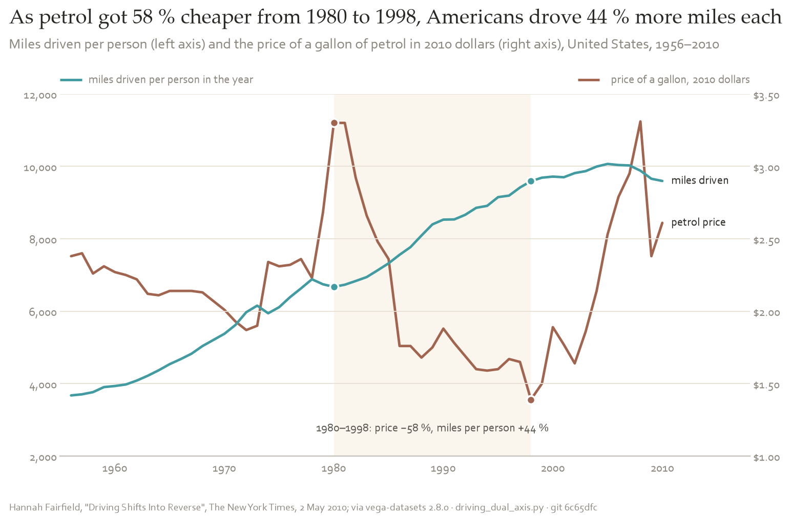
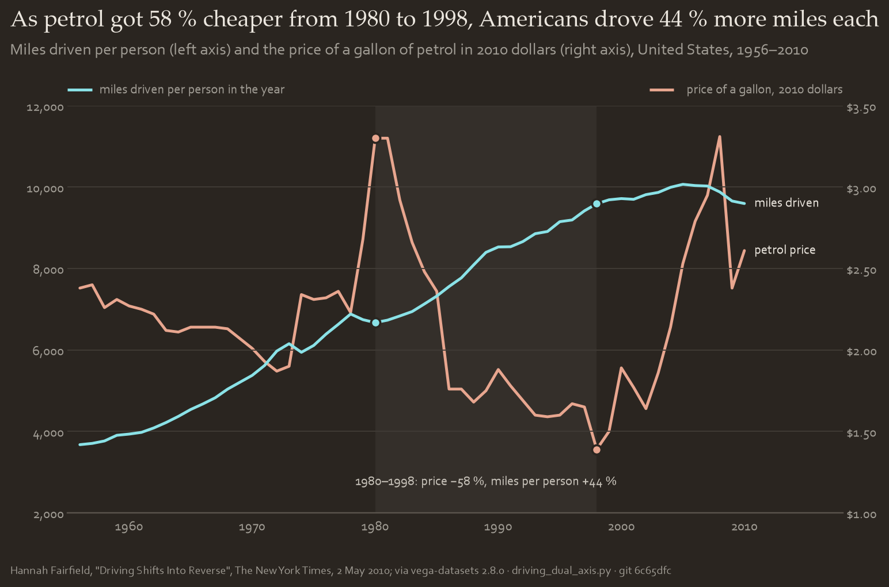
2. Comparison and ranking
Bar chart
Horizontal for word labels, vertical for ordered categories. Teal tint, the highlighted bar in terracotta. Sorted by value unless the order means something. Error bars in secondary, no caps.
Dot plot, lollipop and dumbbell
Beyond about twelve categories: ringed dots on 0.7 pt rule-grey stems. Before and after: two dots on one stem.
3. Distribution
Histogram and density
Histogram in the tint with 1.2 pt gaps. Several distributions: density curves in the tones, or a ridgeline. The subtitle gives the bin width or bandwidth.
Box, violin, beeswarm
Under about thirty points a beeswarm, up to a few hundred a box plot, more a violin. Tint fill, tone outline, 0.7 pt whiskers.
4. Relation
Scatter plot
Ringed dots; more than three families need direct labels. Fit line 1.6 pt in the tone, band in the tint. Label only the points the claim names.
Heat map and 2D density
One ramp, teal by default, lagoon for values over many decades. 1.2 pt surface lines between cells, no spines. Missing cells hatched in terracotta.
Connected scatter and correlogram
Connected scatter: 1.6 pt line, years labelled every few steps. Correlogram: half matrix on the diverging scale, centred on zero.
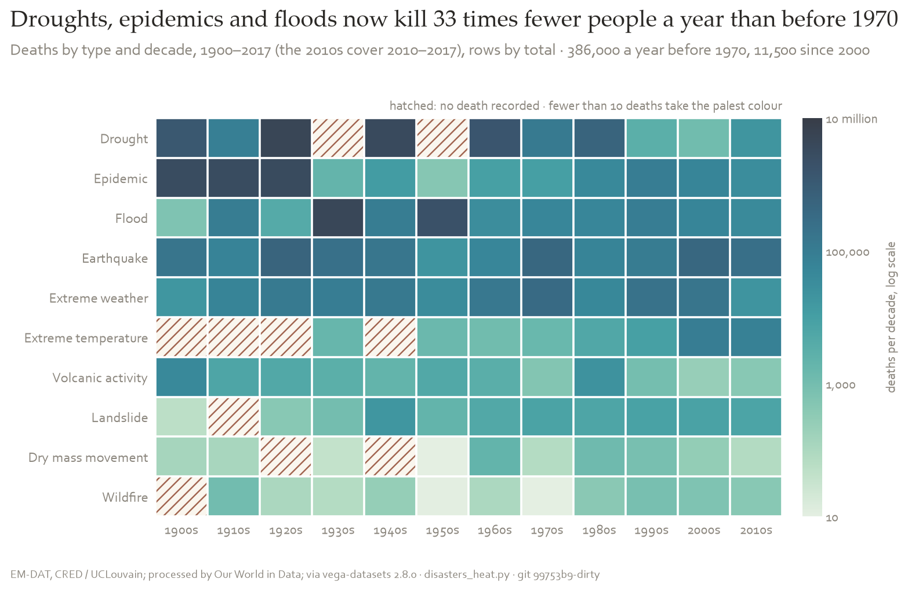
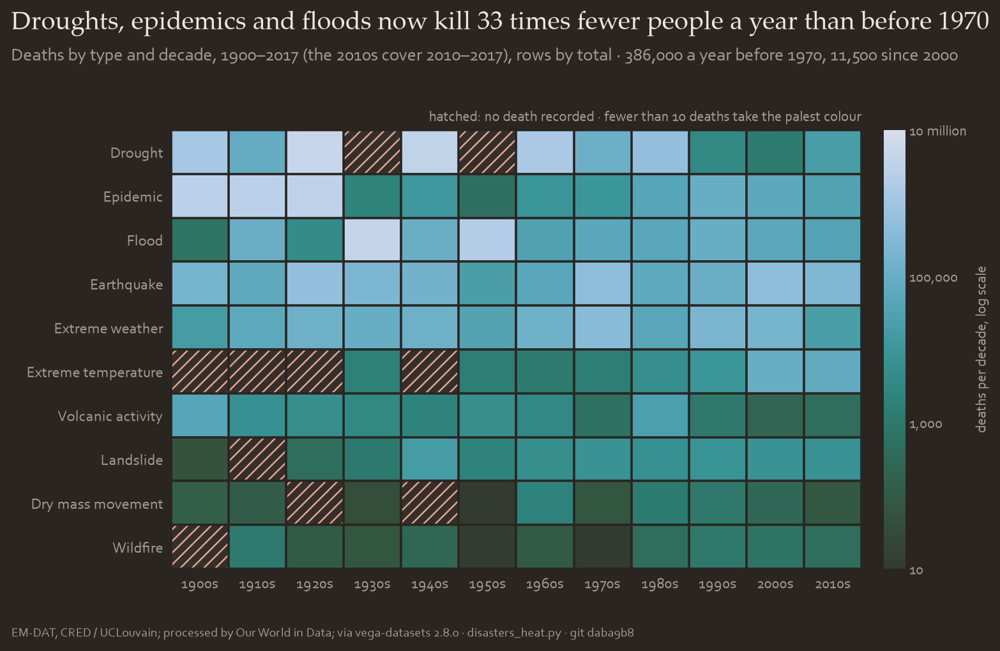
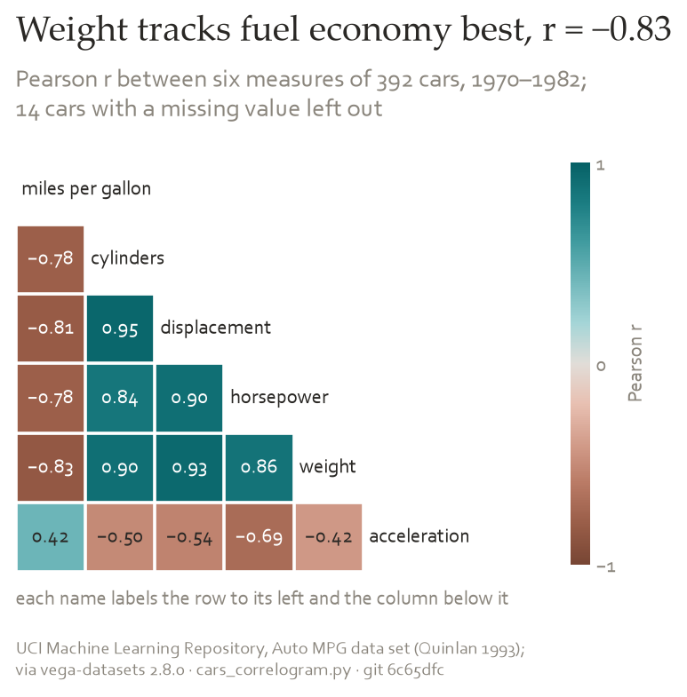
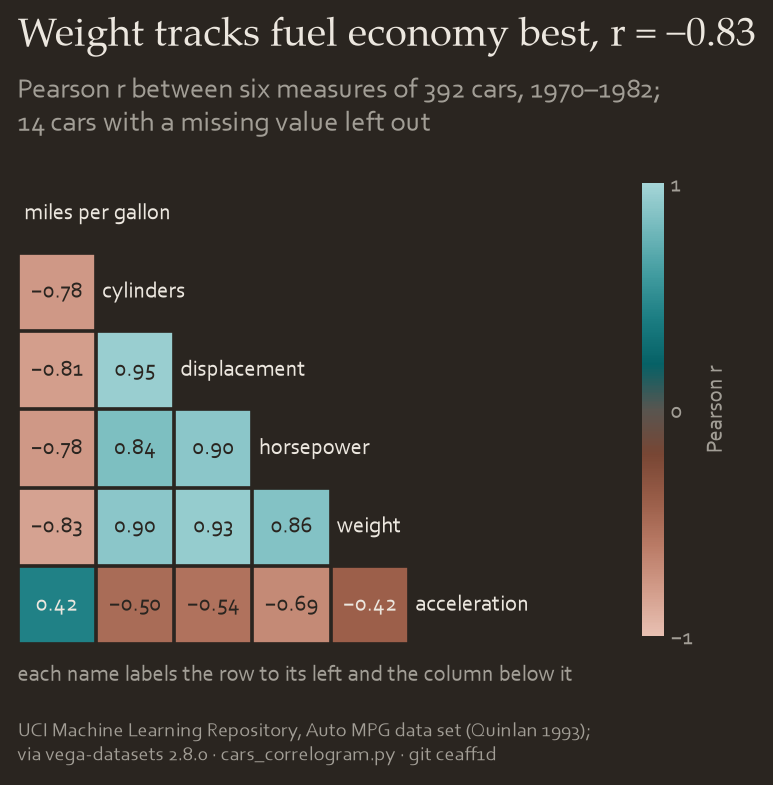
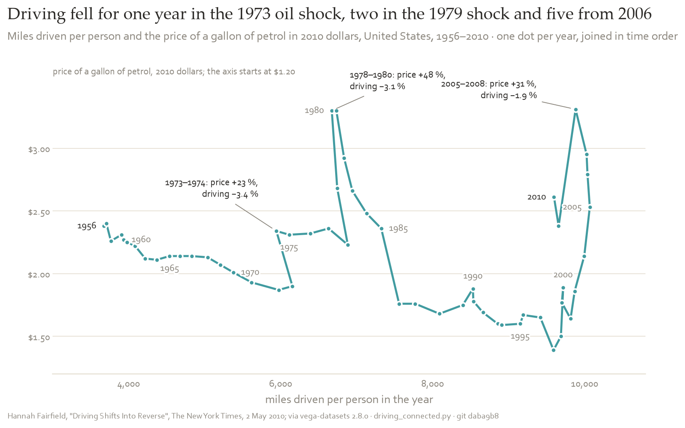
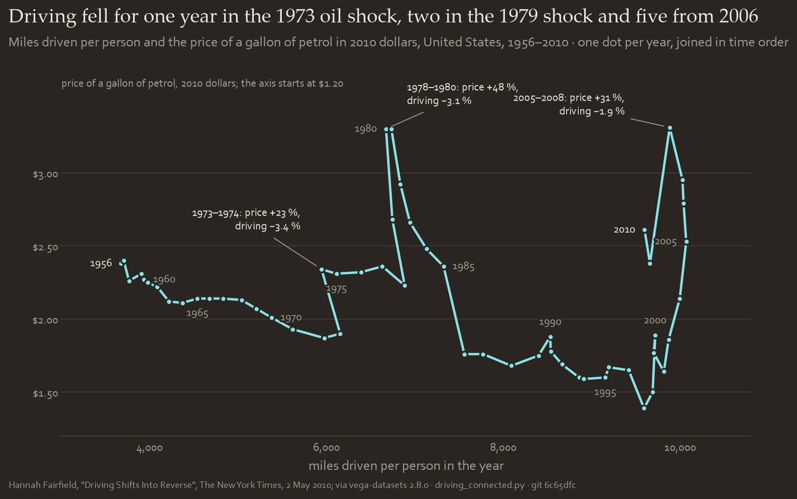
5. Part of a whole
A horizontal stacked bar of tints with surface gaps; a waffle for a share to count; a treemap for a hierarchy. Pies: six segments at most, shares written on.
Word cloud
For an overview of counts only.
- Words horizontal, font size ∝ √count.
- Deterministic layout.
- Exact counts of the top words beside it.
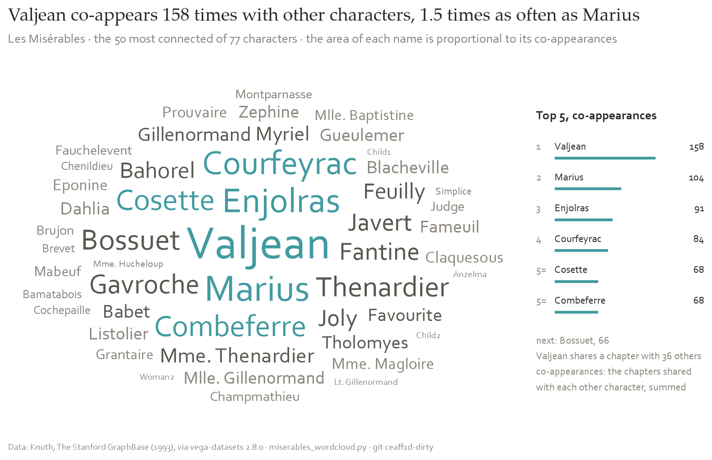
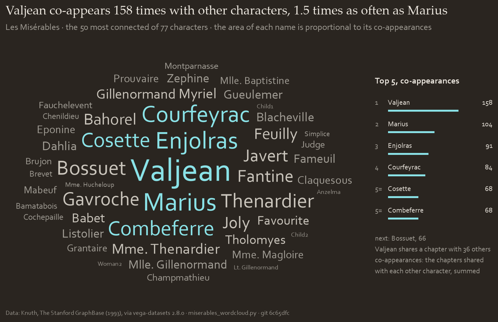
6. Position: maps
Borders 0.4 pt in the grid colour, water as the surface. Choropleth: one ramp in classes, no data hatched. Bubble map: ringed dots sized by area. Add a dot plot for small countries.
7. Flow, trees and networks


Phylogeny and tree
Branches 1.0 pt in secondary, tips as ringed dots, claimed clades in the tones. Time at the bottom, present at the right.
Network
Edges 0.4 pt rule grey at 0.6 opacity; nodes coloured by community, up to six. The subtitle names the layout.
Sankey and chord
Flows in tints at 0.6 opacity, nodes as bars in the tones. Over about eight groups: small multiples.
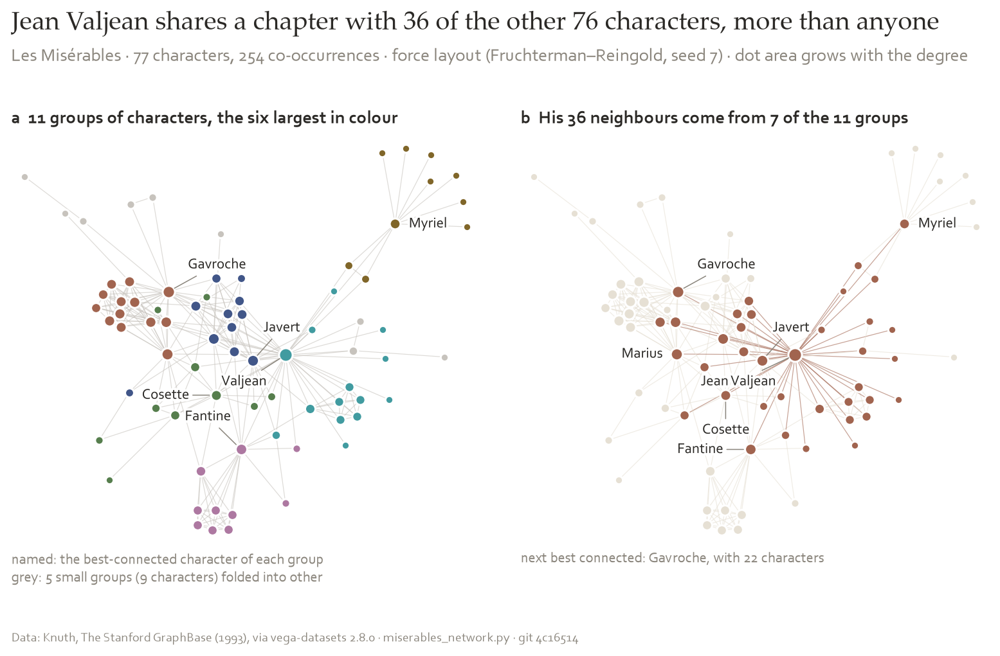
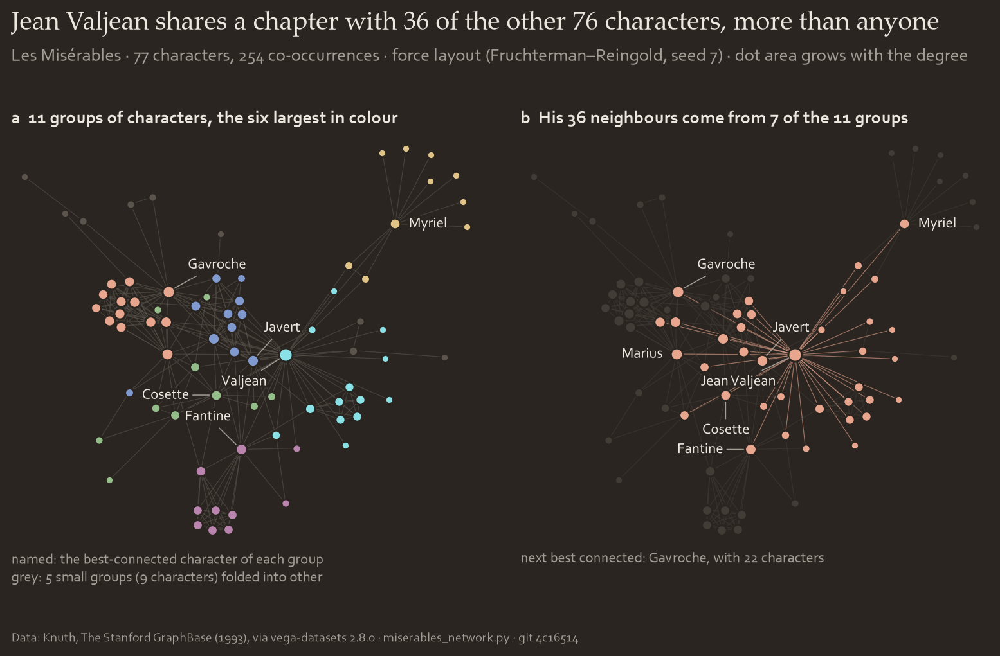


The third axis
A 3D axis only when all three hold; then draw it with its 2D twin.
- x, y and z are of equal standing: z = f(x, y).
- The shape is the claim: a ridge, saddle or peaks.
- A heat map with contours cannot do the job.
| setting | value |
|---|---|
| projection | orthographic |
| view | elevation 24°, azimuth −58° |
| box aspect | 1 : 1 : 0.62 |
| panes | transparent, hairline grid, three ticks per axis |
| colour | z by a named gradient, flat shading |
| mesh | none, about 90 × 90 faces |
| floor | 6 % below the minimum, seven contours |
| file | surface rasterised at 200 dpi or more, text vector |
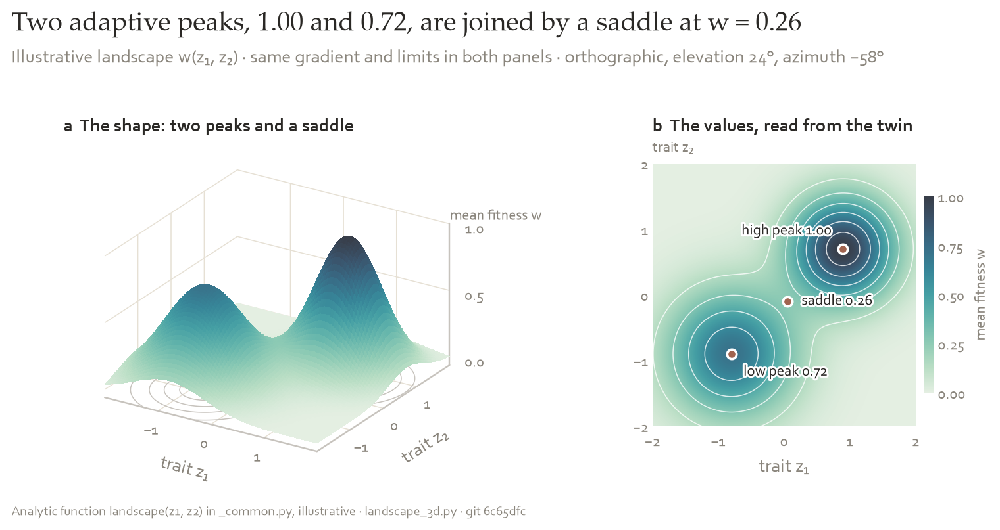
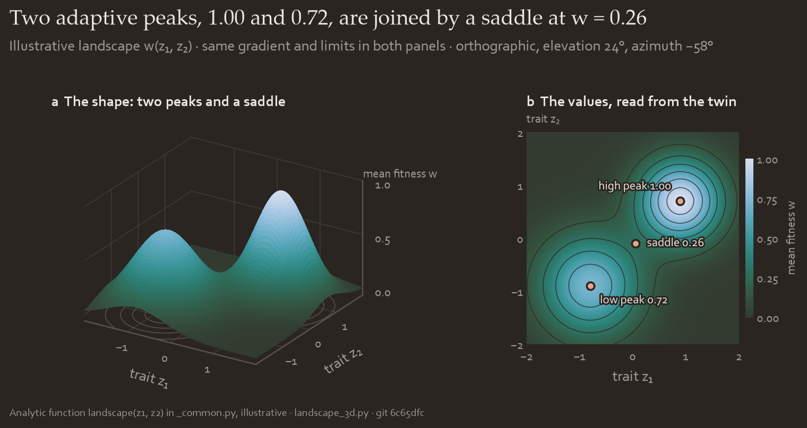


The 2D twin
A heat map with contours of the same data, gradient and limits, as panel b or in the supplement. On the web, a rotatable version may sit beside it.
No 3D for
Bars, pies, areas, lines or tilted flat charts. None in decks, reports or infographics.


Across all forms
- Identity: tones in slot order. Magnitude: one ramp. Polarity: the diverging pair. State: status colours.
- One thing claimed: terracotta for it, rule grey for the rest.
- Beyond six series: small multiples.
- Direct labels, and a note on what the marks are.
- An unfamiliar form gets a subtitle on how to read it.